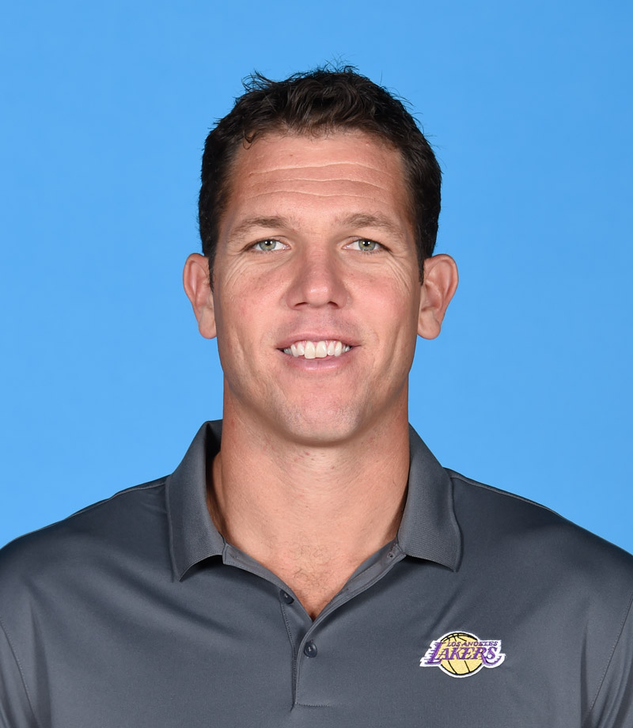

Luke Walton
HEAD COACH
Luke Walton enters his third season as head coach, after he was hired as the 26th head coach in Lakers franchise history, and the 22nd in the Los Angeles era, on April 29, 2016.
In his first season at the helm, Walton’s staff improved the team’s win total by nine games from the 2015-16 season, winning 17 games at home, the most by the franchise since 2012-13. Walton’s fast-paced, ball movement-focused offense resulted in an average of 104.7 points per game, the most by a Laker team since the 2008-09 season. Walton and his staff also developed rookies Brandon Ingram and Ivica Zubac throughout the season. Ingram’s averages improved each month, as he earned a trip to the Rising Star’s Challenge at NBA All-Star Weekend. Zubac notched four double-doubles on the season, and became the youngest Laker in franchise history to record a 25-point double-double.
| Name |
Number |
Position |
| Lonzo Ball |
#2 |
Guard |
| Michael Beasley |
#11 |
Forward |
| Isaac Bonga |
#17 |
Guard |
| Kevtavious Caldwell-Pope |
#1 |
Guard |
| Alex Caruso |
#4 |
Guard |
| Tyson Chandler |
#5 |
Center |
| Josh Hart |
#3 |
Guard |
| Brandon Ingram |
#14 |
Forward |
| Lebron James |
#23 |
Forward |
| Kyle Kuzma |
#0 |
Forward |
| Javale McGee |
#7 |
Center |
| Svi Mykhailiuk |
#10 |
Guard |
| Rajon Rondo |
#9 |
Guard |
| Lance Stephenson |
#6 |
Guard |
| Moritz Wagner |
#15 |
Center |
| Johnathan Williams |
#19 |
Forward |
| Ivica Zubac |
#40 |
Center |